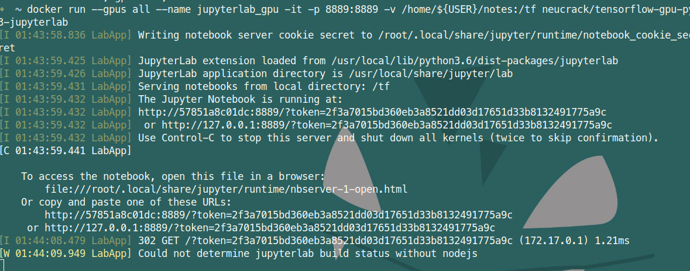
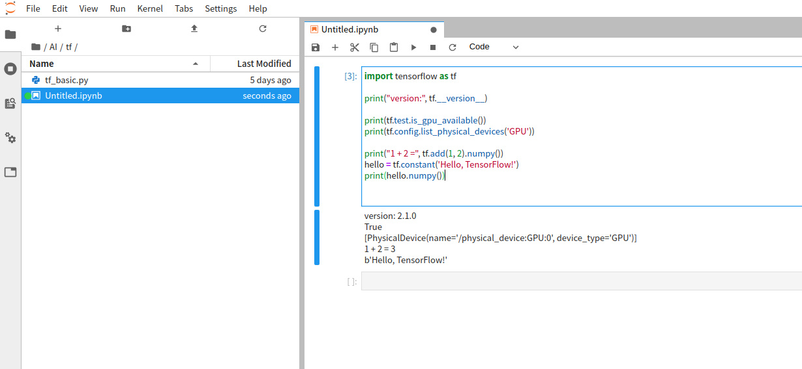

TensorFlow Linux GPU + jupyterlab environment installation (Docker) (Ubuntu Deepin Manjaro)
Copyright statement: This article is neucrack's original article and follows the CC 4.0 BY-SA copyright agreement. Please attach the original source link and this statement for reprinting.
Original link: https://neucrack.com/p/116
Using docker here, the installation environment is simpler (you only need to install the NVIDIA driver, you don’t need to install cuda, and of course you don’t have to worry about the cuda version) and stable~
And you can run multiple dockers at the same time, such as running multiple jupyterlabs at the same time for different people to use
Install docker
Install docker, version must be 19.03 and above (you can use docker --version to view), if the version is lower than this version, later use of nvidia-docker driver will fail and you will be prompted to find it --gpu all` parameter
Installation
- If it is Manjaro, directly
yay -S docker - Other releases:
See the official tutorial: https://docs.docker.com/install/linux/docker-ce/debian/
deepin is based on debian 9.0
If it is deepin, you need to modify the unstable insudo vim /usr/share/python-apt/templates/Deepin.infoto stable
And use the commandsudo add-apt-repository "deb [arch=amd64] https://download.docker.com/linux/debian stretch stable"
Set up proxy
If the download is slow, you may need to set up a proxy, or you can use a domestic mirror instead of an official mirror, such as daocloud mirror acceleration
Docker proxy setting reference: https://neucrack.com/p/286
When you pull the image, you can set the proxy to make the pull faster. It is recommended to remove the proxy when creating the container
Set the current user can access docker (non-root)
Reference here: https://docs.docker.com/install/linux/linux-postinstall/
sudo groupadd docker
sudo usermod -aG docker $USER
newgrp docker # Or restart the terminal, if it does not take effect, you can restart
Common commands
docker images: list image list
docker run [options] image_name [command]: create a new container from the image
docker ps: running container
docker ps -a: all containers, including those that are not running
docker rm container_name: delete the container
docker rmi image_name: delete image
docker start container_name: start the container
docker attatch container_name: attach to the container
docker exec conrainer_name [comand]: execute commands in the container
docker logs container_name: view container execution log
docker build -t image_name .: build an image from Dockerfile
docker run common parameters
-it: Enable interactive terminal
-rm: delete in time, do not save the container, that is, delete after exit
--gpus all: enable all GPU support
-p port1:port2: host and container port mapping, port1 is the port of the host
-v volume1:volume2: the disk mapping between the host and the container, volume1 is the folder of the host, such as mapping /home/${USER}/notes to /tf/notes
--name name: Give the container a name. Without this parameter, the name is randomly generated
--device device:container_device: hang on the device, such as /dev/ttyUSB0:/dev/ttyUSB0
--network=host: Use the host's network
--restart: Automatically start, you can use this setting to start automatically, if you forget to run it, you can use docker update --restart=always container name to update
no: Do not restart the container automatically. (default value)
on-failure: The container exits due to an error (the exit status of the container is not 0) restart the container
unless-stopped: Restart the container when it has been stopped or Docker stopped/restarted
always: restart the container when the container has been stopped or Docker stopped/restarted
Install graphics card driver
The graphics card installation part has written an independent article, refer to Linux Nvidia graphics card installation
Install mirror
Refer to the official document: https://www.tensorflow.org/install/docker
For example, my Ubuntu here: (Be sure to read the documentation, it may be different, there are updates)
- Install nvidia-docker
Just follow the installation guide in the readme, for example, Ubuntu:
# Add the package repositories
distribution=$(. /etc/os-release;echo $ID$VERSION_ID)
curl -s -L https://nvidia.github.io/nvidia-docker/gpgkey | sudo apt-key add-
curl -s -L https://nvidia.github.io/nvidia-docker/$distribution/nvidia-docker.list | sudo tee /etc/apt/sources.list.d/nvidia-docker.list
sudo apt-get update && sudo apt-get install -y nvidia-container-toolkit
sudo systemctl restart docker
If it is deepin, you need to change the system version
distribution="ubuntu18.04"
curl -s -L https://nvidia.github.io/nvidia-docker/gpgkey | sudo apt-key add-
curl -s -L https://nvidia.github.io/nvidia-docker/$distribution/nvidia-docker.list | sudo tee /etc/apt/sources.list.d/nvidia-docker.list
sudo apt-get update && sudo apt-get install -y nvidia-container-toolkit
sudo systemctl restart docker
If it is Manjaro, just command yay -S nvidia-docker! (If you encounter slow downloads, you can use poipo to set up a global proxy, refer to Terminal proxy setting method)
- Test whether nvidia-docker and cuda can be used
Use the image of nvidia/cuda, this image is just for testing, you can delete it when you use it up, if you don’t have a proxy set up, and you don’t want to spend too much time pulling the image, you can use this image directly instead of tensorflow/tensorflow:latest -gpu-py3 this mirror or neucrack/tensorflow-gpu-py3-jupyterlab (or daocloud.io/neucrack/tensorflow-gpu-py3-jupyterlab) this mirror (recommended) (jupyterlab is installed on the basis of the former , And do better user rights management)
lspci | grep -i nvidia
docker run --gpus all --rm nvidia/cuda nvidia-smi
such as:
➜ ~ sudo docker run --gpus all --rm nvidia/cuda nvidia-smi
Tue Mar 10 15:57:12 2020
+------------------------------------------------- ----------------------------+
| NVIDIA-SMI 440.64 Driver Version: 440.64 CUDA Version: 10.2 |
|-------------------------------+----------------- -----+----------------------+
| GPU Name Persistence-M| Bus-Id Disp.A | Volatile Uncorr. ECC |
| Fan Temp Perf Pwr:Usage/Cap| Memory-Usage | GPU-Util Compute M. |
|===============================+================= =====+======================|
| 0 GeForce GTX 106... Off | 00000000:01:00.0 On | N/A |
| 33% 39C P0 27W / 120W | 310MiB / 6075MiB | 0% Default |
+-------------------------------+----------------- -----+----------------------+
+------------------------------------------------- ----------------------------+
| Processes: GPU Memory |
| GPU PID Type Process name Usage |
|================================================ ============================|
+------------------------------------------------- ----------------------------+
Wed Mar 11 02:04:26 2020
+------------------------------------------------- ----------------------------+
| NVIDIA-SMI 430.40 Driver Version: 430.40 CUDA Version: 10.1 |
|-------------------------------+----------------- -----+----------------------+
| GPU Name Persistence-M| Bus-Id Disp.A | Volatile Uncorr. ECC |
| Fan Temp Perf Pwr:Usage/Cap| Memory-Usage | GPU-Util Compute M. |
|===============================+================= =====+======================|
| 0 GeForce GTX 108... Off | 00000000:04:00.0 Off | N/A |
| 35% 41C P5 25W / 250W | 0MiB / 11178MiB | 0% Default |
+-------------------------------+----------------- -----+----------------------+
| 1 GeForce GTX 108... Off | 00000000:81:00.0 Off | N/A |
| 39% 36C P5 19W / 250W | 0MiB / 11178MiB | 2% Default |
+-------------------------------+----------------- -----+----------------------+
+------------------------------------------------- ----------------------------+
| Processes: GPU Memory |
| GPU PID Type Process name Usage |
|================================================ ============================|
| No running processes found |
+------------------------------------------------- ----------------------------+
If the driver version is too low, there will be a prompt to update the driver
At the same time, notice that the cuda version is 10.2, maybe tensorflow only supports 10.1. If tensorflow is installed directly on the host, it will report an error and not support. The benefits of using docker here are reflected. Don’t bother, just make sure that the driver is installed. Up
Deepin has an error
docker: Error response from daemon: OCI runtime create failed: container_linux.go:349: starting container process caused "process_linux.go:449: container init caused \"process_linux.go:432: running prestart hook 0 caused \\\"error running hook: exit status 1, stdout:, stderr: nvidia-container-cli: ldcache error: open failed: /sbin/ldconfig.real: no such file or directory\\\\n\\\"\"": unknown .
Refer to the solution here: https://github.com/NVIDIA/nvidia-docker/issues/614 to solve:
ln -s /sbin/ldconfig /sbin/ldconfig.real
docker error: nvidia-container-cli: initialization error: cuda error: unknown error
Restart the system to be resolved
Run tensorflow with GPU
Pull the mirror, pull directly
docker pull neucrack/tensorflow-gpu-py3-jupyterlab
# docker pull tensorflow/tensorflow:latest-gpu-py3-jupyter
# docker pull tensorflow/tensorflow
# docker pull tensorflow/tensorflow:latest-gpu
The image on daocloud can be used in China, and the speed will be faster:
docker pull daocloud.io/neucrack/tensorflow-gpu-py3-jupyterlab
Execute the test statement:
docker run --gpus all -it --rm neucrack/tensorflow-gpu-py3-jupyterlab python -c "import tensorflow as tf; print('-----version:{}, gpu:{}, 1+2 ={}'.format(tf.__version__, tf.test.is_gpu_available(), tf.add(1, 2).numpy()) );"
If daocloud is used, the image name needs to be changed to
daocloud.io/neucrack/tensorflow-gpu-py3-jupyterlab
If there is no problem, the following output will appear (it will be accompanied by a lot of debugging information and there may be warning messages, you can take a closer look):
-----version:2.1.0, gpu:True, 1+2=3
Jupyterlab
docker run --gpus all --name jupyterlab-gpu -it -p 8889:8889 -e USER_NAME=$USER -e USER_ID=`id -u $USER` -e GROUP_NAME=`id -gn $USER` -e GROUP_ID =`id -g $USER` -v /home/${USER}:/tf neucrack/tensorflow-gpu-py3-jupyterlab
If daocloud is used, the image name needs to be changed to
daocloud.io/neucrack/tensorflow-gpu-py3-jupyterlab
Then you can use the browser to use jupyterlab at the address of http://127.0.0.1:8889/, and the directory corresponds to the set /home/${USER} directory


Exit directly with Ctrl+C
This container will always exist on the computer after it is created, you can use docker ps -a to view it, and use it next time you start it
docker start jupyterlab_gpu
Can also be attached to the container:
docker attatch jupyterlab_gpu
Stop the container:
docker stop jupyterlab_gpu
Delete the container:
docker rm jupyterlab_gpu
Modify the user and root passwords so that you can use the sudo command
docker exec -it jupyterlab_gpu /bin/bash
passwd $USER
passwd root
If you need to create a new container every time and delete it when you use it up, you only need to add a -rm parameter after the run command
other questions
- Prompt when running the program: ResourceExhaustedError: OOM when allocating tensor with shape[784,128]
Use nvidia-smi to view memory usage
tensorflow will apply for (almost) all video memory at once:
➜ ~ nvidia-smi
Fri Mar 20 09:18:48 2020
+------------------------------------------------- ----------------------------+
| NVIDIA-SMI 435.21 Driver Version: 435.21 CUDA Version: 10.1 |
|-------------------------------+----------------- -----+----------------------+
| GPU Name Persistence-M| Bus-Id Disp.A | Volatile Uncorr. ECC |
| Fan Temp Perf Pwr:Usage/Cap| Memory-Usage | GPU-Util Compute M. |
|===============================+================= =====+======================|
| 0 GeForce GTX 108... Off | 00000000:04:00.0 On | N/A |
| 0% 48C P2 60W / 250W | 10726MiB / 11178MiB | 0% Default |
+-------------------------------+----------------- -----+----------------------+
| 1 GeForce GTX 108... Off | 00000000:81:00.0 Off | N/A |
| 0% 47C P2 58W / 250W | 197MiB / 11178MiB | 0% Default |
+-------------------------------+----------------- -----+----------------------+
+------------------------------------------------- ----------------------------+
| Processes: GPU Memory |
| GPU PID Type Process name Usage |
|================================================ ============================|
| 0 3099 G /usr/lib/xorg/Xorg 21MiB |
| 0 40037 C /usr/bin/python3 10693MiB |
| 1 40037 C /usr/bin/python3 185MiB |
+------------------------------------------------- ----------------------------+
There may be too many processes using video memory, and some processes can be properly exited;
It is also possible that the memory application is repeated, you can try to restart the container to solve it
- Has been running without results
Restart the docker container to solve it. Anyway, if something is indecisive, restart to solve it. .
- Prompt
could not retrieve CUDA device count: CUDA_ERROR_NOT_INITIALIZED
Multi-process may be used. The new process directly copies the environment of the current process, resulting in an error. The solution is ** the parent process needs to be imported**, which is imported separately when needed in the child process, instead of writing to the global, reference Here: https://abcdabcd987.com/python-multiprocessing/
ImportError: libGL.so.1: cannot open shared object file: No such file or directory
apt install libgl1-mesa-glx
Failed to get convolution algorithm. This is probably because cuDNN failed to initialize
The graphics card memory is insufficient. Check if it is occupied by other programs. If there are multiple graphics cards, you can set the environment variable CUDA_VISIBLE_DEVICES to set the graphics card to be used. For example, there are three graphics cards, the subscripts are 0, 1 , 2, select the third card and set it to 2
import os
os.environ["CUDA_VISIBLE_DEVICES"] = '2'